30 September 2022
Images
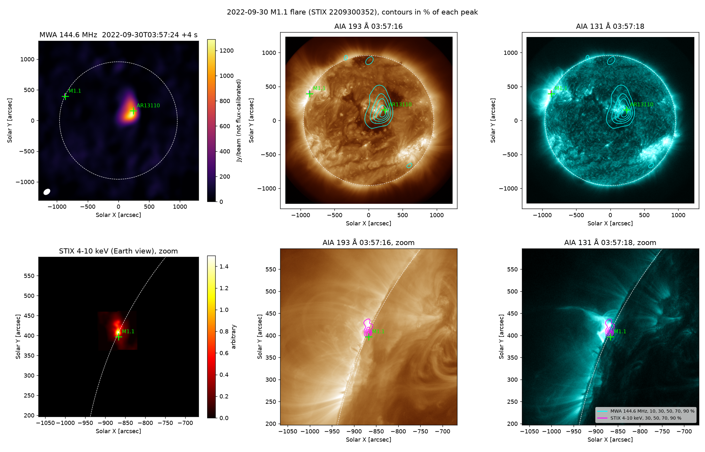
03:57:24 UT, 144.6 MHz. Radio source on AR 13110. M1.1 on the north-east limb is radio-quiet at this time. STIX 2209300352.
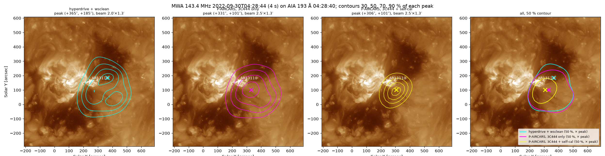
04:28:44 UT, 143.4 MHz, 4 s, AIA 193. Hyperdrive peak/rms 56; P-AIRCARS 3C444 only 70; P-AIRCARS self-cal 312. Positions agree.
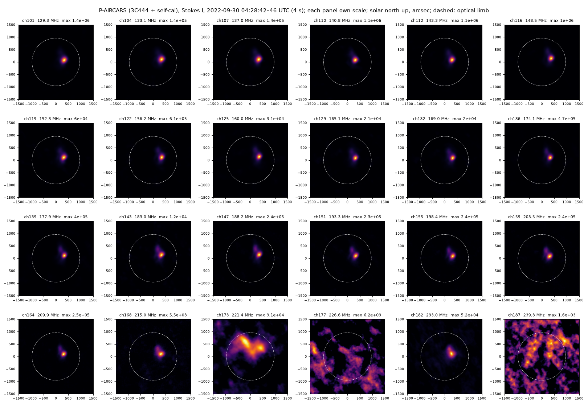
P-AIRCARS, 3C444 + self-cal, 04:28:42–46 UT, 4 s. 21 of 24 channels usable. Solar north up.
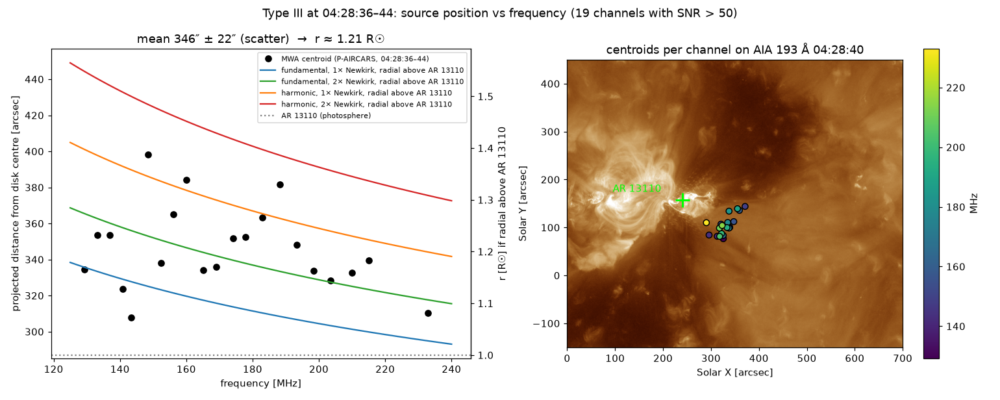
04:28:36–44 UT. 19 channels with SNR > 50. Mean height 346″ ± 22″ ≈ 1.21 R☉.
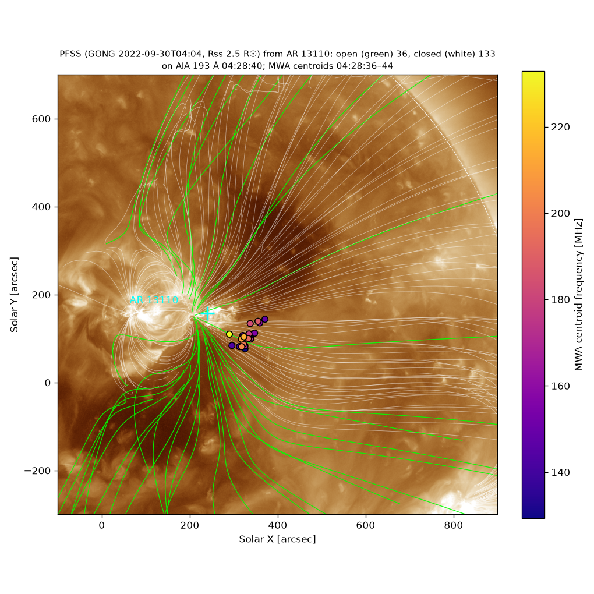
PFSS (GONG 04:04 UT) from AR 13110. Open lines (green) 36, closed (white) 133. MWA centroids 04:28:36–44 sit on open field from the west edge of the region.
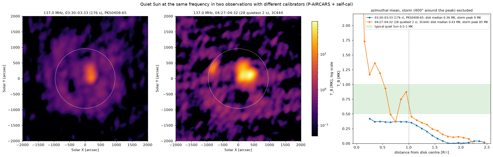
137.0 MHz. Left: 1348543720, 03:30–03:33, PKS0408-65, disk 0.36 MK, storm 9 MK. Right: 1348547272, 28 quietest of 136 × 2 s, 3C444, disk 0.43 MK, storm 85 MK. At 0.7–0.8 R☉ both ≈ 0.37 MK.
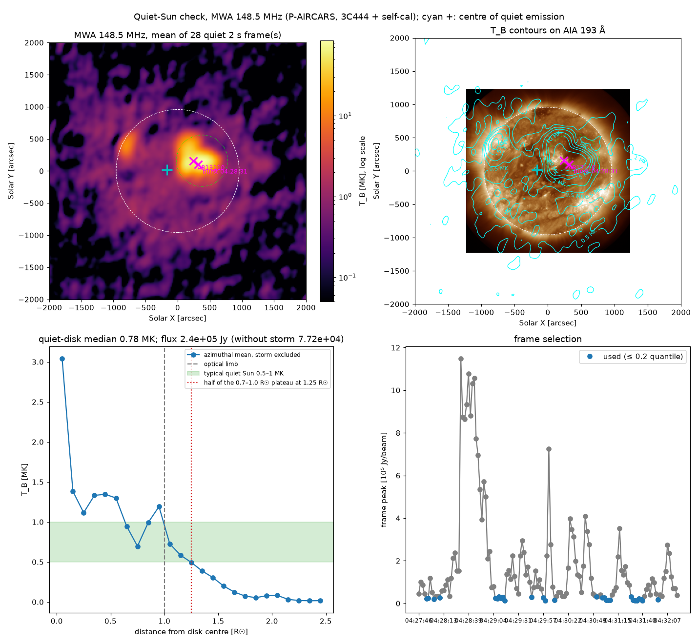
1348547272, 148.5 MHz, mean of the 28 quietest of 136 × 2 s frames. Quiet disk 0.78 MK, radio-disk half radius 1.25 R☉. Storm over AR 13110 ≈ 86 MK.
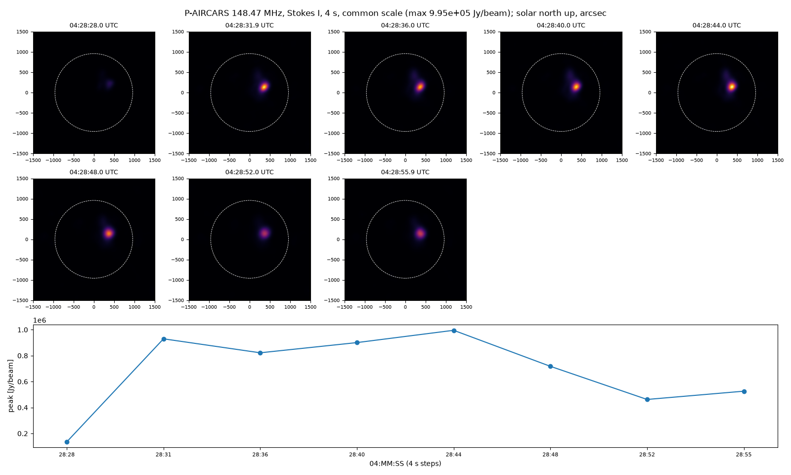
148.5 MHz, eight 4 s steps through the type III.
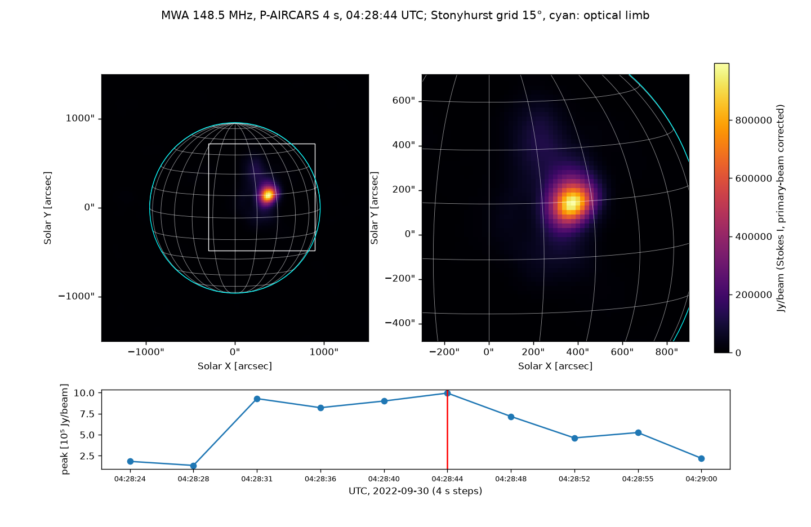
148.5 MHz, peak of the 10 × 4 s sequence.
AIA 193 with MWA 148.5 MHz contours at the peak of the 10 × 4 s sequence.
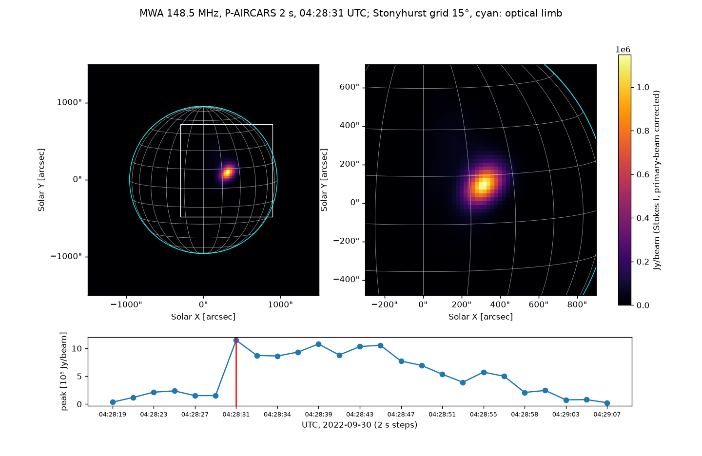
148.5 MHz, 2 s imaging, peak frame.
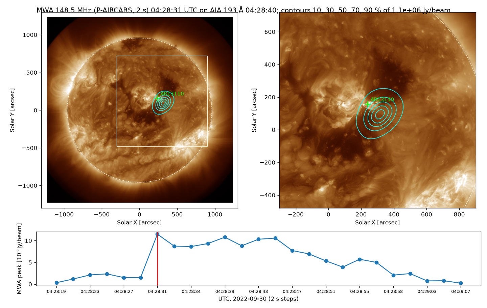
AIA 193 with 2 s MWA 148.5 MHz contours.
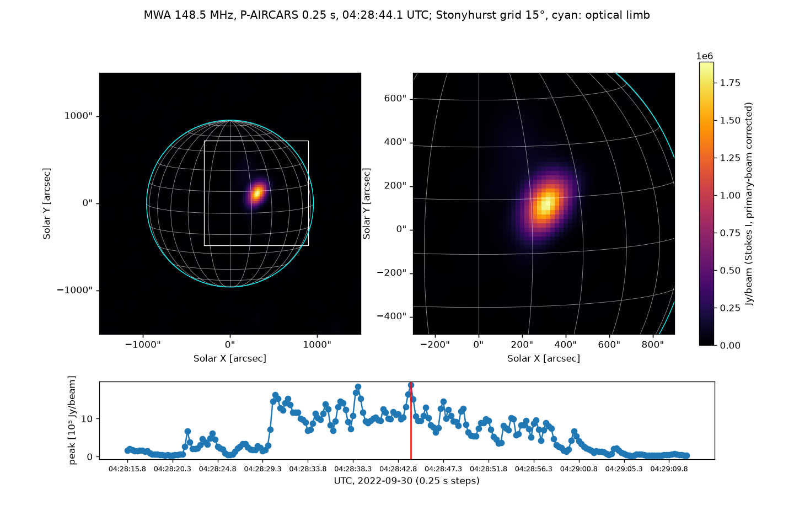
148.5 MHz, 0.25 s imaging, peak frame.
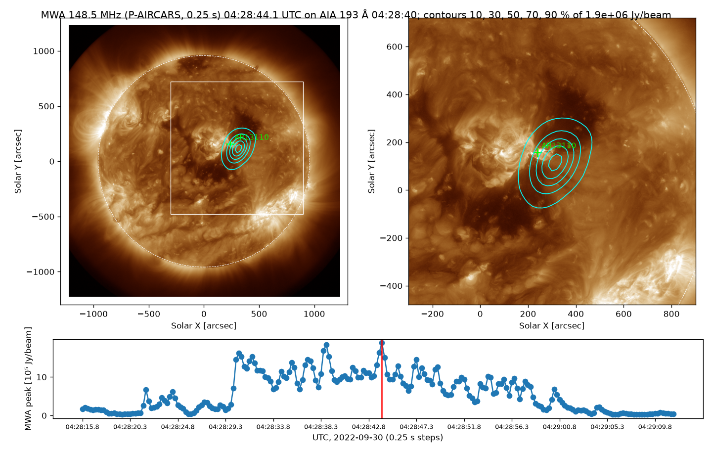
AIA 193 with 0.25 s MWA 148.5 MHz contours.
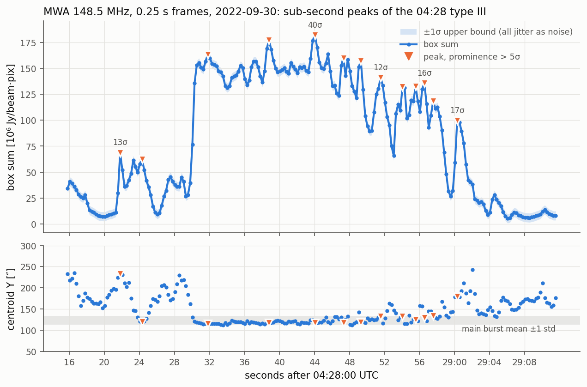
0.25 s, 148.5 MHz, significance of the burst against the quiet frames.
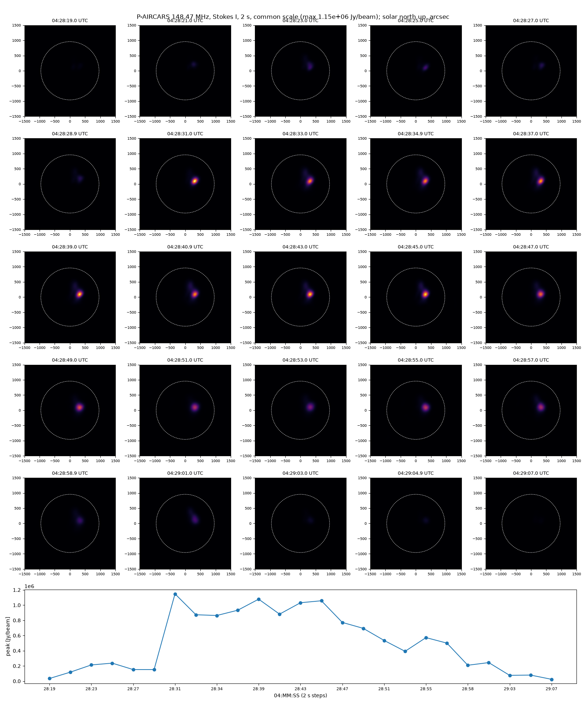
P-AIRCARS, 2 s, 148.5 MHz.
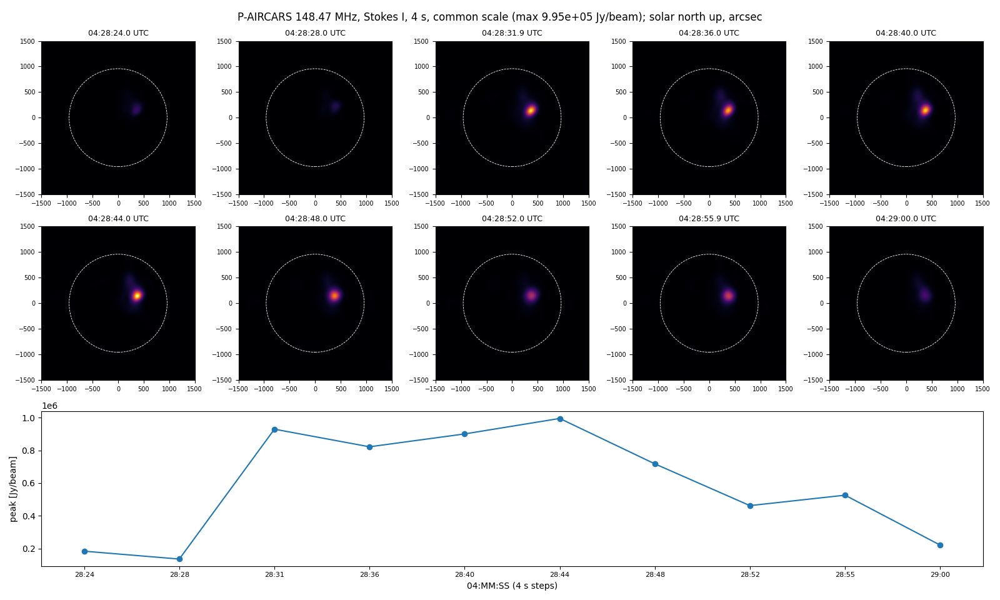
P-AIRCARS, 10 × 4 s, 148.5 MHz.